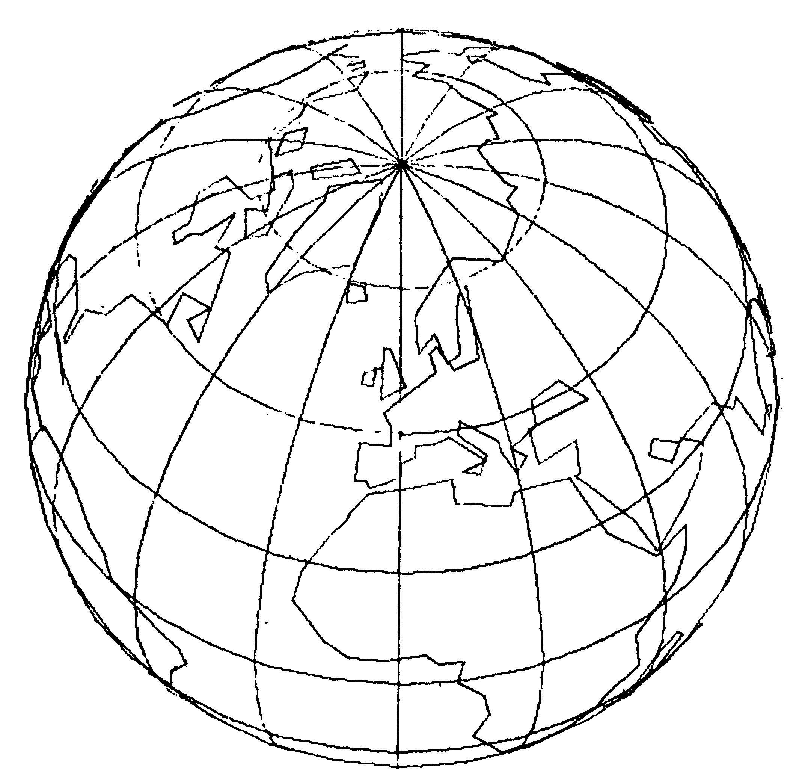
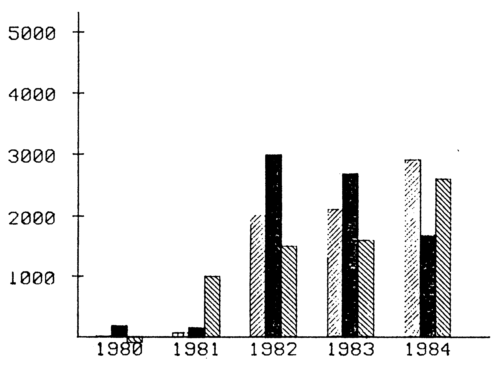
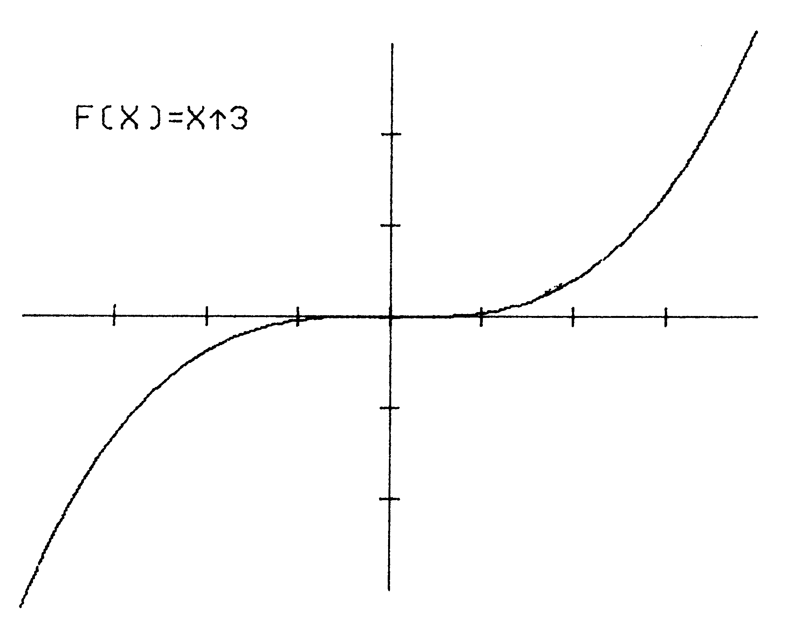
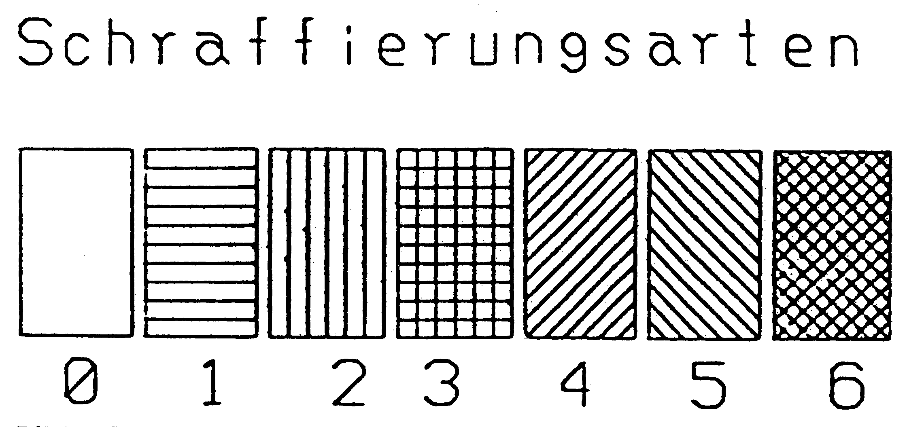
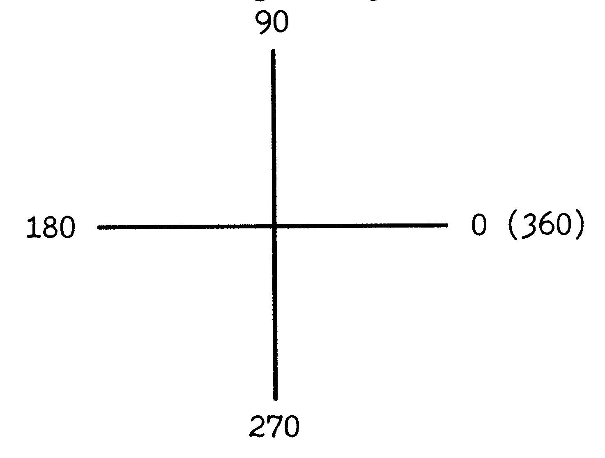
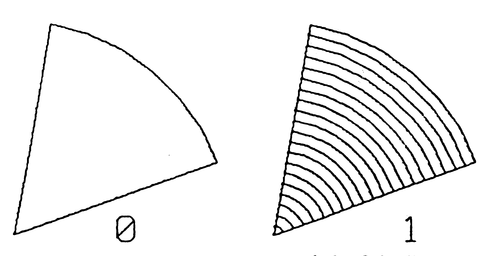
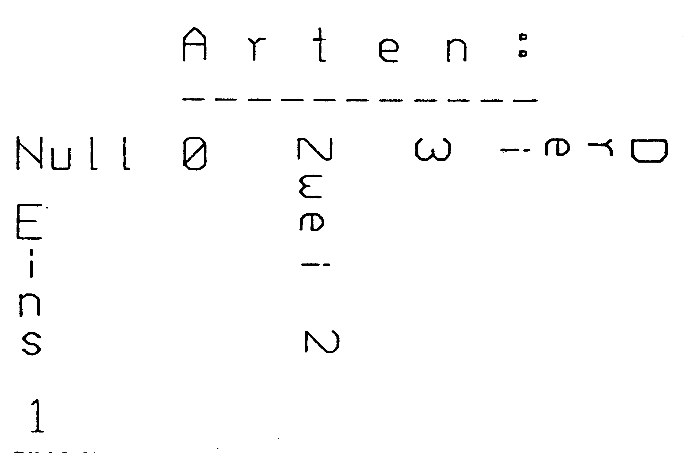
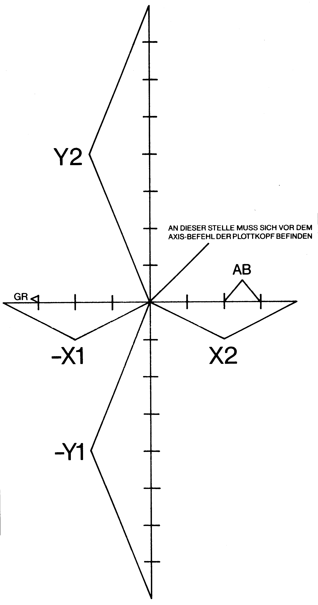

Der Plotter 1520 wird zum Zeichenbrett
Eine Befehlserweiterung zum Abtippen, die Ihnen den Umgang mit Ihrem Printer/Plotter VC 1520 erleichtert. Erstellen Sie Super-Grafiken auf Ihrem Plotter.
lot-Basic ist eine Befehlserweiterung, die den Commodore-Plotter VC 1520 unterstützt und zusätzlich weitere Basic-Befehle besitzt. Hier die wesentlichsten Merkmale von »Plot-Basic«.
-
Das Zeichnen von Linien, Rechtecken, Kreisen, Kreisbögen, Kreissegmenten, Koordinatensystemen sowie deren Schraffur und vieles mehr wird zum Kinderspiel (siehe Bilder Sbis 7).
-
Fast alle Befehle verfügen über drei. Adressierungsarten (absolut, absolut-relativ und relativ-relativ).
-
Über 50 neue Befehle mit hunderten von Befehlskombinationen.
-
Eingebaute Utilities, die Ihnen das Programmieren erheblich erleichtern (zum Beispiel: TRACE, PRINT AT, TAKE, KEY, STATUS, DIR, OLD, AUTO, DEL, RENUM, FIND oder MERGE).
-
Erleichtertes Programmieren durch »tolerante« Fehlerbeseitigung (ILLEGAL QUANTITY etc.).
Damit Sie Plot-Basic optimal ausnützen können, müssen wir erst einmal mit etwas Theorie anfangen.
Der Plotbereich beträgt auf der X-Achse (von links nach rechts) 480 Schritte (Stufen). Sie sind von O bis 479 durchnumeriert.
Auf der Y-Achse beträgt dieser 999 (0 bis 998) nach oben und 998 nach unten (O bis -998).
Ein Schritt hat die Länge von 0.2 Millimetern. 5 Schritte entsprechen also 1 Millimeter.
Jeden Punkt kann man nun mit einer X- und einer Y-Koordinate genau bestimmen. Zum Beispiel: .
X=100, Y=200 (100/200), 100 Schritte nach rechts und 200 nach oben. Oder X=300, Y=-900 (300/-900), 300 Schritte nach rechts und 900 nach unten.
Insgesamt sind das also (998+999)+480 = 958 560 verschiedene Punkte. Wenn man bedenkt, daß der Commodore 64 normalerweise eine Auflösung von 320+200 = 64 000 und im Multicolor-Mode nur noch 160*200 = 32 000 hat, dann schneidet der Plotter mit einer zirka 15- beziehungsweise zirka 30fach höheren Auflösung sehr gut ab.
Jetzt geht's aber richtig los.....
Vorweg einige Bemerkungen:
Sie sollten während des Studiums dieser Anleitung am Computer sitzen und alles sofort ausprobieren. Dafür sind umfangreiche Beispielprogramme gegeben, die Sie ausprobieren und verändern sollten. So wird es Ihnen ein Leichtes sein, die Befehle (fast) in NullKommanichts zu verstehen und zu erlernen.
Im folgenden sei bei Verwendung von X und Y (eventuell mit Indices) nachstehendes vereinbart (soweit nichts anderes gesagt):
X = 0 bis 479 Y = -998 bis 998
Wobei bei allen X- und Y-Werten ein ERROR erst ab 1.70141183 E+38 auftritt (OVERFLOW ERROR auf einen ILLEGAL QUANTITY ERROR wurde bewußt verzichtet, dies ist besonders bei berechneten Parametern ein großer Vorteil).
Der Nullpunkt (X,Y = 0,0) ändert sich bei jedem Carriage Return (CHR$(13)). Dies ist zum Beispiel nach einem PPRINT-Befehl der Fall.
Parameter in Klammern sind optional, das heißt, können nach Belieben weggelassen werden. »STR« bedeutet »String«; also A$ oder »ABC«; »var« ist eine numerische Variable; also zum Beispiel A,CS,a(3) oder auch 12.4,2* A.
Bei allen Befehlen, auch bei allen späteren Kommandos von Plot-Basic, ist ein allgemeiner Punkt zu beachten:
Folgt einer IF..THEN-Konstruktion ein Befehl des Plot-Basic-Befehlsvorrates, so ist nach dem THEN unbedingt ein <:> (Doppelpunkt) zu setzen, also zum Beispiel: 10 IF B=100 THEN:AT 10,10, "DER DOPPELPUNKT IST WICHTIG"
Plotter-Befehle
PPRINT
Format....: PPRINT STR / PPRINT VAR Parameter: Wie beim Basic-Befehl PRINT _ Funktion..: Ausgabe von Zeichen auf dem Plotter Beispiel..: PPRINT "PLOT-BASIC"
Dieser Befehl ersetzt die folgende Befehlssequenz: OPEN 1,6 PRINT #1, "Plot-Basic"
CLOSE1
CHARACTER
Format.....: CHARACTER VAR Parameter..: -VAR (1,2,4,8) wobei:
var = 1 = 10 Zeichen pro Zeile var = 2 = 20 Zeichen pro Zeile var = 4 = 40 Zeichen pro Zeile var = 8 = 80 Zeichen pro Zeile Beispiel...: CHARACTER 8
Funktion...:. Verändern der Zeichengröße 10 FOR I =1T0 4
20 : READ GR
30 : CHARACTER GR
40 : PPRINT GR x 10, ZEICHEN PRO ZEILE"
50 NEXT
60 DATA 1,2,4,8
COLOUR
Format.....: COLOUR VAR Parameter..: – VAR: Farbnummer (0-3) wobei:
"0 = schwarz 1 = blau
2 = grün
3= rot
Funktion..: Bestimmung der Plotfarbe Beispiel..: COLOUR 2 (Plotfarbe = grün) Mit diesem Befehl können Sie die Farbe auswählen, mit der geplottet werden soll. Eine Fehlermeldung wird erst ab var größer 255 ausgegeben. Die Farben wiederholen sich periodisch, das heißt:
4 = schwarz
5 = blau
6 = grün und so weiter

COLOUR 6 würde also einem COLOUR 2 entsprechen. 10 FOR I = 0 TO 3 20 : COLOUR I
30 : READ FA$.
40 : PPRINT I;"= ";FA$"ER STIFT"
50 NEXT
60 DATA SCHWARZ, BLAU, GRÜN, ROT
ROTATE 0/1
Format....: ROTATE VAR
Parameter: -VAR: (0/1) wobei:
O = Normaler-Horizontalbetrieb 1 = 90-Grad-Drehung nach rechts Beispiel.: ROTATE 1
Funktion.: Drehen von Zeichen
Mit diesem Befehl können Sie einstellen, ob die Zeichen normal oder gedreht ausgedruckt werden sollen.
10 ROTATE O
20 PPRINT "0 = NORMALSCHRIFT"
30 ROTATE 1
40 TE$="1 -- ZEICHEN UM 90 GRAD GEDREHT"
50 FOR I = 1 TO LEN(TE$)
60 : PPRINT MID$(TE$,I,1) 70 NEXT
ROTATE 2/3
Format.....: ROTATE VAR
Parameter..: – VAR: (2/3) wobei:
2 = Großschrift und über <SHIFT> Kleinschrift (Standardwert)

3 = Kleinschrift und über <SHIFT> Großschrift
Beispiel..: ROTATE 2
Funktion..: Wahl der Schriftart
Bitte schalten Sie jetzt den Groß/Klein-Modus des Commodore 64 ein und tippen Sie das folgende Programm ein: 10 rotate 2
20 pprint "2 – großschrift / SHIFT KLEINSCHRIFT" 30 rotate 3
40 pprint "3 – kleinschrift / SHIFT GROSSCHRIFT" LINE
LINE X1, Y1, X2, Y2

- X1: X – Startkoordinate
(0 bis 479)
- Yi: Y – Startkoordinate
(-998 bis 998)
- X2: X – Zielkoordinate
\ (0 bis 479)
- Y2: Y – Zielkoordinate
(-998 bis 998)
Beispiel..: LINE 10,-30,470,200
Funktion..: Zeichen einer Linie
Mit diesem Befehl sind Sie in der Lage, eine Linie von X1,Y1 nach X2,Y2 zu zeichnen.
Übrigens, es ist egal, ob Sie LINE 10,-30,470,200 oder LINE 470,200,10,-30 benutzen, dies wird erst interessant, falls Sie mit dem Endpunkt der Linie weiterarbeiten. 10 FOR I =0T0 3 20 COLOUR I
30 : LINE 0,I x -10,479,1 x -10 40 NEXT
LINESELECT
Format....: LINESELECT VAR
74
Parameter: – VAR: (0-15) wobei:
O = Normale Linie
1 = leicht gestrichelt
Increment = 1 Stufe = 0.2 mm 2 = Increment = 2 Stufen = 0.4 mm
15 = start gestrichelt
Increment = 15 Stufen = 3 mm Beispiel.: LINESELECT 12
Funktion.: Wahl der Linienart
Die gewählte Linienart bleibt solange erhalten, bis sie entweder durch einen Reset oder durch ein LINESELECT O0 gelöscht wird. (Wie beim COLOUR-Befehl sind Werte bis 255 erlaubt, die Werte wiederholen sich periodisch). Also auch beim PPRINT-Befehl.
10 LINESELECT 15
20 CHARACTER 1
30 PPRINT "LINESELECT"
10 CHARACTER 4
20 FOR I = 0 TO 15
30 : LINESELECT I
40 : PPRINT RIGHT$(" "+STR$(I),2) 50 : LINE 30,10,479,10
60 NEXT
70 LINESELECT O
REC
Format.....: REC X,Y,B,H (,S,A)
Parameter..: – X: X-Koordinate der unteren linken Ecke des Rechtecks (O bis 479) – Y: Y-Koordinate der unteren linken Ecke des Rechtecks (-998 bis 998) – B: Breite des Rechtecks
-
H: Höhe des Rechtecks
-
S: Schraffierungsart (O bis 6) siehe Bild 1
-
A: Abstand zwischen den einzelnen Schraffierungslinien

REC 20,40,100,200
REC 20,40,100,200,5,10
REC 100,100,-100,-100,6,20
REC 100,200,-10,20,0,10 entspricht
REC 100,200,-10,20
Funktion.: Zeichnen eines Rechtecks (und dessen Schraffur)
Da dieser Befehl sehr vielseitig ist, schaut er anfangs etwas kompliziert aus.
Hier noch ein paar Erläuterungen:
zu B/H
Sowohl bei der Breite als auch bei der Höhe können negative Werte angegeben werden. Dies vereinfacht die Programmierung erheblich.
zu S/H
Falls Sie keine Schraffur des Rechtecks wünschen, können diese Parameter weggelassen werden. Die Schraffierungsarten entnehmen Sie bitte Bild 1. Falls S=O, wird das Rechteck nicht schraffiert. Falls für A=O gewählt wird, schraffiert Ihr Plotter ewig. Aus diesem Grund sollte A immer größer als O sein. Ein Abstand zwischen 10 und 30, je nach Größe des Rechtecks, hat sich gut bewährt.
ARC
ARC MX,MY,XR\YR,SW,EW,A – MX: X-Koordinate des Mittelpunktes der Ellipse, deren Bogen gezeichnet werden soll (0-479) – MY: Y-Koordinate des Mittelpunktes der Ellipse, deren Bogen ge-
- RX:
- RY:
zeichnet werden soll (-998 bis 998)
Radius der Ellipse (Kreis) in X-Richtung, deren Bogen gezeichnet werden soll Radius der Ellipse (Kreis) in Y-Richtung, deren Bogen gezeichnet werden soll – SW: Startwinkel des Bogens (0-360) – EW: Endwinkel des Bogens (0-360) – A: Winkelabstand zwischen zwei zu berechnenden Punkten (0-360)
Beispiel..: ARC 200,0,100,200,90,289,10 Funktion..: Zeichnen des Bogens einer Ellipse in jeweils definierten Schritten.
Auch dieser Befehl ist wieder etwas kompliziert: Kreis:
Falls Sie einen Kreis zeichnen möchten, dann gilt: RX=RY=Radius, sv=0, ew=360.
Beispiel: Sie möchten einen Kreis mit dem Mittelpunkt 100/200 und dem Radius 50 zeichnen: ARC 100,200,50,50,0,360,10
Um den Winkelabstand (hier 10) brauchen Sie sich jetzt noch nicht zu kümmern, dieser wird weiter unten genau erklärt.
Ellipse:
Falls Sie eine Ellipse zeichnen möchten, dann gilt: SW=0, EW=360
XR ist dann der X-Radius der Ellipse und YR der Y-Radius. ARC 100,200,50,100,0,360,10
Kreisbogen:
Hier gilt alles unter Kreis gesagte, nur daß SW der Startwinkel des Bogens ist und EW der Endwinkel. Sie möchten einen Kreisbogen mit dem Mittelpunkt 100/200, dem Radius 50, dem Startwinkel=90 Grad und dem Endwinkel=270 Grad zeichnen:
ARC 100,200,50,50,90,270,10
Die Angabe der Winkel erfolgt in Altgrad:

Ellipsenbogen:
Hier gilt alles unter Ellipse Gesagte, nur daß SW der Startwinkeldes Bogens ist und EW der Endwinkel. Sie möchten einen Ellipsenbogen mit dem Mittelpunkt 100/200, dem Radius 50 beziehungsweise 100, dem Startwinkel = 90 Grad und dem Endwinkel = 270 Grad zeichnen:
ARC 100,200,50,100,90,270,10
Der Parameter A:
Mit der A-Ergänzung des ARC-Befehls können Sie das Zeichnen von Kreis(bög)en, Ellipsen(bögen) ausweiten auf Drei-, Vier-, Fünf-, Sechsecke.
Dabei gibt A die jeweilige Kantenlänge in Grad des überspannenden Bogens an.
Was kann man sich darunter vorstellen? Genau genommen können Sie mit A angeben, in welchem Gradabstand die einzelnen Punkte eines jeweiligen Bogens gezeichnet und die entstehenden Punkte mit einer Linie verbunden werden sollen. Vergrößert man nun diesen Abstand, so nimmt die Genauigkeit der Zeichnung stetig ab, bis direkt ein Vieleck zu beobachten ist. Interessant sind besonders dabei die folgenden Werte:
120 – Dreieck
90 – Viereck
72 – Fünfeck
60 – Sechseck
45 – Achteck °
40 – Neuneck
36 – Zehneck
Für normale Bögen, Kreise, Ellipsen kann gesagt werden: Um so kleiner A ist, um so genauer ist die Zeichnung. Dabei nimmt jedoch die Geschwindigkeit ab. Auch die Größe des Radius ist von Bedeutung.
Je größer die Radien sind, desto kleiner muß A sein, um die gleiche Genauigkeit zu erzielen.
Die ganze-Beschreibung zu dem komplexen ARC-Befehl hört sich nun sehr kompliziert an. Aber probieren, probieren, probieren...
SECTOR
SECTOR MX, MY, RA, SW, EW, A (,SA, AB)
- MX : X-Koordinate des Mittelpunktes des Kreises, dessen Sektor gezeichnet werden soll (0-479)
Y-Koordinate des Mittelpunktes des Kreises, dessen Sektor gezeichnet werden soll (-998 bis 998)
-RA: Radius des Kreises, dessen Sektor gezeichnet werden soll – SW : Startwinkel des Bogens (0-360)
-
EW : Endwinkel des Bogens (0-360) -A: Winkelabstand zwischen zwei zu berechnenden Punkten (0-360)
-
SA: Schraffierungsart (0-10) – AB: Schraffierungsabstand SECTOR 200,0,100,90,289,10,1,10 Zeichnen eines Kreissektors und dessen Schraffur
Dieser Befehl ähnelt dem ARC-Befehl, denn dieser Befehl zeichnet einen Kreisbogen und verbindet sowohl den ersten Punkt als auch den letzten Punkt dieses Bogens mit dem Mittelpunkt (MX/MY). Weiter stehen verschiedene Schraffierungsarten zur Verfügung. Dieser Befehl eignet sich also besonders zum Erstellen von »Kuchengrafiken«.
MX/MY/RA/SWI/EWIA:
Wie unter ARC beschrieben.
SA:
Schraffierungsarten (0-10). Siehe hierzu Bild 2. BeiSA = O keine Schraffierung.

AB:
Abstand zwischen den einzelnen Schraffierungslinien in Plotpunkten minus eins!
Werte zwischen 10 und 20 sind zu empfehlen.
10 AB = 12
20 FRI =1T0O 4
30 :EW=SW+1Ix 36
40 : SECTOR 240,0,150,SW,EW,AB
50 : SW = EW
60 NEXT
70 REM SETZEN SIE FÜR AB EINMAL
80 REM 1,2 ODER 36 EIN!!!
TEXT
Format....:
Parameter.: Beispiel..: Funktion..: TEXT XY,GR,AR,STR
-X : X-Koordinate der linken unteren Ecke des ersten Zeichens des Strings (0-479) Y-Koordinate der linken unteren Ecke des ersten Zeichens des Strings (-998 bis 998)
Zeichengröße (1,2,4,8) (Wie beim Befehl CHARACTER) Art (0-4) (siehe Bild 3). Wird für diesen Parameter 4 gewählt, so wird in Proportionalschrift gedruckt (nicht im Bild enthalten) Vorher muß mit ROTATE 3 auf Klein/Großschreibung umgestellt werden.

Text, der geplottet werden soll -GR:
- STR:
Beispiel..: ROTATE 3
TEXT 0,0,2,4,
"PROPORTIONALSCHRIFT" Funktion..: Schreiben eines Textes
Mit diesem Befehl können Sie Ihre Zeichnungen beliebig beschriften. Dieser hat den Vorteil, daß kein Carriage Return durchgeführt wird und somit der absolute Nullpunkt erhalten bleibt. Falls Zahlen ausgedruckt werden sollen, müssen diese mit der STR$()-Funktion erst in einen String umgewandelt werden. STR sollte nicht länger sein, als in der Zeile noch Platz ist.
SET
Format...: SETXY
Parameter: -X: _ X-Koordinate des Zielpunktes (0-479)
-Y: \Y-Koordinate des Zielpunktes (-998 bis 998)
Beispiel.: SET 200,-193
Funktion.: Bewegung des Plotstiftes von der jetzigen Position zur Position (X/Y), wobei der Stift oben ist. MOVE
MOVE XY
-X : X-Koordinate des Zielpunktes (0-479)
-Y:Y-Koordinate des Zielpunktes (-998 bis 998) MOVE 200,-193
Bewegung des Plotstiftes von der jetzigen Position zur Position (X/Y),; wobei der Stift unten ist. Beispiel..: Funktion..:
AXIS Format...: Parameter:
Beispiel..: Funktion..:
AXIS X1, X2, Y1, Y2, AB, GR -X1 : Kleinste X-Koordinate des Koordinatensystems, das gezeichnet werden soll : Größte X-Koordinate des Koordinatensystems, das gezeichnet werden soll
: Kleinste Y-Koordinate des Koordinatensystems, das gezeichnet werden soll
: Größte Y-Koordinate des Koordinatensystems, das gezeichnet werden soll
-
AB: Abstand zwischen den Skalierungen
-
GR :Länge des Skalierungsstriches in eine Richtung AXIS -100,100,-200,200,20,10 Mit diesem Befehl können Sie ein Koordinatensystem oder Teile davon zeichnen.
Um den Befehl AXIS anwenden zu können, müssen noch einige Dinge beachtet werden:
Der Plotter beginnt das Zeichnen genau an der Stelle, an der der Stift (Plotkopf) gerade steht, das heißt, der Plotkopf muß vor dem AXIS-Befehl auf den Nullpunkt des zu zeichnenden Koordinatensystems gebracht werden. Dies ist zum Beispiel mit dem SET-Befehl möglich. Weiter gilt: X1 muß kleiner gleich X2 sein
Y1 muß kleiner gleich Y2 sein
Falls Sie etwa nur die Zeichnung der X-Achse wünschen, dann setzen Sie für Y1 und Y2 einfach O ein. Um ein Koordinatensystem zu zeichnen, bei dem der Nullpunkt bei 240, -30 liegt, dessen X-Achse von -100 bis 100 reicht (relativ zum Nullpunkt des Koordinatensystems!) und dessen Y-Achse eine Ausdehnung von -200 bis 200 hat (wieder relativ zum Nullpunkt des Koordinatensystems!), einen Skalierungsabstand von 20 und die Skalierungsgröße 10 beträgt, muß man folgende Befehle eingeben:
SET 240,-30:AXIS -100,100,-200,200,20,10 Noch unklar? Dann schauen Sie'sich Bild 4 an.

RELATIVE
Format.....: RELATIVE X,Y
Parameter... -X :X-Koordinate des relativen Nullpunktes
-Y :Y-Koordinate des relativen Nullpunktes
Beispiel...: RELATIVE 100,200
Funktion...: Setzen des relativen Nullpunktes
Dieser Befehl erleichtert Ihnen die Grafikprogrammierung Ihres Plotters erheblich, denn Sie können nun Ihren eigenen Nullpunkt bestimmen.
Bevor jetzt Plot-Basic einen Befehl ausführt, wird zur X-Koordinate des Befehls einfach der X-Wert, der beim RELATIVE-Befehl vorher angegeben worden ist, addiert. Genauso geschieht es bei der Y-Koordinate. Um nun die absoluten Befehle von den relativen zu unterscheiden, wird vor dem Befehl einfach ein R gesetzt. Folgende relative Befehle stehen zur Verfügung:
RLINE
RREC
RTEXT
RARC
RSECTOR
RMOVE
RSET
Der Befehl SET 100,200 entspricht also den Befehlen RELATIVE 100,200:RSET 0,0
SET 110,210 entspricht RELATIVE 100,200:RSET 10,10 Jetzt können auch negative X-Werte auftreten!
P-MODUS
Diese Erweiterung der Befehle ähnelt dem RELATIVE-Modus, nur daß der Nullpunkt jetzt jedesmal woanders liegt, das heißt, als Nullpunkt wird die jeweilige Plotkopfposition angesehen.
Um nun den P-Modus von den anderen Befehlen zu unterscheiden, wird vor dem Befehl einfach ein P gesetzt. Folgende P-Befehle stehen zur Verfügung:
PLINE
PREC
PTEXT
PARC
PSECTOR
PMOVE
PSET
Der Befehl PSET 100,150 bewirkt also, egal wo der Druckkopf ist, daß der Druckkopf sich 100 Schritte nach rechts und 150 Schritte nach oben bewegt.
Ein PLINE 0,0,100,100 entspricht also einem PMOVE 100,100. LINE 100,300,200,200 entspricht einem SET 100,300:PMOVE 100,-100
RESET
Format....: RESET
Parameter.: keine
Beispiel..: RESET
Funktion..: Ausführen eines RESET (hat die glei-
che Wirkung wie das Ein- und Ausschalten des Plotters). Dabei werden alle Parameter zurückgesetzt.
UTILITIES
Plot-Basic besitzt nicht nur Grafikbefehle für Ihren Plotter, sondern unterstützt gleichfalls mit einigen wesentlichen Kommandos Ihre Programmierarbeit. Sie werden sehen, daß hier eine Auswahl getroffen wurde, die sich nicht zu verstecken braucht. AT
Format.....: AT SP, ZE,STR oder AT SPZE,VAR Parameter... – SP : Spalte (0-39)
-
ZE:: Zeile (0-24)
-
STR: und VAR wie beim PRINT-Befehl Beispiel..: AT 10,12, "CBM 64"
Funktion..: positionierte Ausgabe eines STRings oder einer VARiablen.
AT 10,12, "CBM 64" schreibt den Text, hier »CBM 64«, auf den Bildschirm, wobei das erste Zeichen (hier: »C«) an der Position 10/12 ausgegeben wird.
10 PRINT CHR$(147)
20 FOR X = 0 TO 39
30 : Y = 12 x SIN(X/6) + 12
40 : AT X,Y,"xx"
50 NEXT AUTO
Format....: AUTO (A,B)
Parameter: – A: Anfangszeilennummer (0-63999)
-B: Abstand der Zeilennummern (1-255). Ohne A und B wird für A = Ound für B = 10 angenommen
Beispiel..: AUTO 10,5
Funktion..: Automatische Zeilennumerierung mit variabler Startnummer und Schrittweite
Nach Eingabe dieses Befehls wird nach jedem Drücken der RETURN-Taste eine neue Zeilennummer ausgegeben. Die Zeilennummer erhöht sich automatisch um den Wert B. Dieser Befehl ist als Erleichterung beim Schreiben eines Programmes gedacht. Durch Drücken von nur RETURN nach der Vorgabe einer neuen Zeilennummer wird AUTO abgeschaltet.
BASIC
Format....: BASIC
Parameter.: keine
Beispiel..: BASIC
Funktion..: Abschalten von Plot-Basic
Mit diesem Befehl werden alle Vektoren wieder normal gesetzt, dabei bleibt ein Programm, das sich im Speicher befindet, und dessen Variablen erhalten. Da der Basic-Interpreter durch Plot-Basic langsamer wird, kann in zeitkritischen Programmteilen, in denen keine Plot-Basic-Befehle vorkommen, Plot-Basic abgeschaltet werden. Durch ein PRINT USR(1) kann man es wieder einschalten.
Wenn Sie einen RESET durchführen (entweder durch einen Resetschalter oder durch SYS 64738), während Plot-Basic in Betrieb ist, wird Plot-Basic neu initialisiert. Falls Sie jedoch Plot-Basic völlig abschalten möchten, dann geben Sie ein:
BASIC:SYS 64738
BASIC und PRINT USR(1) können sowohl im Direktmodus als auch im Programmodus eingesetzt werden.
DEL
Format....: DEL -EZ / DEL AZ- / DEL AZ-EZ Parameter: AZ : Anfangszeilennummer
EZ : Endzeilennummer Beispiele.: DEL 100 löscht bis (einschließlich) Zeile 100 alles
DEL 100- löscht ab (einschließlich) Zeile 100 alles
DEL 100-200 löscht ab (einschließlich) Zeile 100 bis (einschließlich) Zeile 200 alles.
Funktion..: Mit diesem Befehl kann ein Teil eines Programms gelöscht werden, ohne daß jede Zeilennummer extra eingetippt werden muß.
DIR
Format....: DIR
Parameter: keine
Beispiel..: DIR
Funktion..: Anzeigen des Disketteninhaltsverzeichnisses ohne Programmverlust.
Einer der größten Mängel des originalen Basic offenbart sich wohl mit dem Fehlen eines DIR-Befehls. Diese Lücke soll hier nun geschlossen werden. Der Befehl istrecht einfach zu bedienen: Eingeben, <RETURN> drücken, fertig. Falls während der Ausgabe des Directorys eine Taste gedrückt wird, so wird die Ausgabe angehalten, solange die Taste gedrückt ist. Durch Drücken der STOP-Taste kann die Ausgabe abgebrochen werden. Ein BREAK wird jedoch nicht ausgegeben, dies hat den Vorteil, daß der DIR-Befehl auch innerhalb von Programmen gut eingesetzt werden kann. Ein im Speicher befindliches Programm wird dadurch nicht gelöscht.
STATUS
Format.....: STATUS
Parameter..: keine
Beispiel...: STATUS
Funktion...: liest den Fehlerkanal der Floppy. Der STATUS-Befehl ersetzt folgendes Basic-Programm: 10 OPEN 1,8,15
20 GET#1, A$ 30 PRINT A$
40 IF ST <>64 THEN 20
50 CLOSE 1
DISK
Format.....: DISK " ANWEISUNG"
Parameter... ANWEISUNG-Flopppy-Systembefehl Funktion...: Vereinfachte Kommunikation mit dem Floppylaufwerk
Beispiel...: DISK ""S:TEST" löscht das File »Test«
Der übliche Umweg zur Übertragung eines Floppy-Systembefehls entfälltnun. Bisher mußten Sie zum Formatieren einer Diskette die folgenden Befehle eingeben:
OPEN 1,8,15, "N:TESTDISK, ID":CLOSE1
Mit dem Disk-Befehl ist dies nun wesentlich einfacher: DISK "N:TESTDISK,ID"
Nach dem DISK-Befehl wird automatisch der STATUS-Befehl ausgeführt.
MERGE
Format.....: MERGE »FILENAME«, GA Parameter.: GA : Geräteadresse
Beispiel...: MERGE "Teil 2",8
Funktion...: Anhängen eines Basic-Programmes von Diskette (Kassette bei ga=1) an ein im Speicher befindliches Programm.
Mit diesem Befehl ist es Ihnen möglich, an ein Basic-Programm im Computer ein weiteres anzuhängen, das Sie durch MERGE einladen. Damit können Sie sich eine kleine Routinensammlung auf einer Diskette anlegen, die Sie bei Bedarf zusammenladen. Die Zeilennummern sollen sich jedoch, falls in dem eingeladenen Programm irgendwelche Zeilenansteuerungen (GOTO, GOSUB..) vorhanden sind, nicht mit den Nummern des Vorprogrammes überschneiden, da es ansonsten (auch nach RENUM!) zu Fehlern kommt.
Vorsicht bei sehr langen Programmteilen! Reicht der Speicher nicht aus, um beide Programme zu fassen, so werden Teile von Plot-Basic überschrieben, was zum Absturz führt! Speichern Sie also bei langen Programmen vorher das im Speicher befindliche Programm (auf Diskette oder Kassette)! SWAP Format.....: SWAP(A$,B$)
Parameter...:. keine
Beispiel...: 10 A$="HALLO"
20 B$="BAUM"
30 PRINT A$,B$
40 SWAP(A$,B$)
50 PRINT A$, B$
Funktion...: Vertauschen zweier Strings Der Vorteil liegt darin, daß kein »Müll« entsteht (praktisch für Sortierroutinen in Basic).
HELP
Format.....: HELP
Parameter...: keine
Beispiel...: HELP
Funktion...: Mit HELP werden Hilfstexte für die
einzelnen Befehle angezeigt. Die erste Hilfsseite wird angezeigt. Andere Seiten lassen sich durch Drücken der Tasten 1,2,3,4,5,6,7,8 und 9 anzeigen. Mit X kommt man wieder in den Direktmodus zurück. Diese Hilfsseiten sind besonders für Befehle nützlich, bei denen viele Parameter angegeben werden können. RENUM
RENUM (X,SW (,Z)) : erste neue Zeilennummer -SW: Schrittweite (1 bis 255) -Z: erstealte Zeile, die umnumeriert werden soll. Z muß kleiner als X sein!
RENUM ohne Parameter numeriert das komplette Programm in Zehnerschritten durch. Die erste Zeilennummer ist 10.
RENUM 90,5: Hierbei ist 90 die erste neue Zeilennummer und 5 die Schrittweite.
RENUM 1000, 17,400: Damit numerieren Sie nicht das komplette Programm neu, sondern erst ab der Zeilennummer 400 – die alte Zeile 400 hat jetzt also die Zeilennummer 1000, von da an geht es in 17er-Schritten weiter Umnumerierung von Basic-Programmen oder Teilen davon. Ein weiteres Juwel unter den Programmierhilfen ist der bekannte RENUM-Befehl. Mit ihm ist es möglich, die Zeilennummern eines ganzen Basic-Programms (oder Teile davon) umzubenennen. Dabei werden selbstverständlich alle GOTOs, GOSUBs, ON...., etc. mit verändert. Dadurch schaffen Sie problemlos Platz zwischen einzelnen Zeilen, wenn Sie etwas einfügen möchten. Tauchen innerhalb des Programms Zeilen auf, die eine andere Zeile ansprechen, obwohl diese überhaupt nicht vorhanden ist, dann wird der entsprechende GOTO, GOSUB.... nicht verändert! Der Befehl DTASET wird nicht umnumeriert, da dessen Zeilennummer auch berechnet werden kann. Hier müssen Sie also als einziges von Hand Änderungen vornehmen. Bei Programmen, bei denen der gewählte Zeilenabstand und die Startzeile dazu führen könnten daß Zeilennummern größer als 63999 auftauchen würden, wird keine Umnumerierung durchgeführt und ein SYNTAX ERROR ausgegeben. Ein Programm, das mit RENUM behandelt wird, kann in seiner Länge zu- oder abnehmen. KEY
Format......: KEY FT,»DEFINITION« Parameter... – FT : Funktionstastennummer (1-8) »DEFINITION« : ein maximal. 10 Zeichen langer Text
Beispiel...: KEY 3, "GOTO"
Funktion... Umprogrammieren der Funktionstasten
Wie Sie sicherlich schon bemerkt haben, sind die Funktionstasten mit verschiedenen Befehlen belegt. Damit Sie diese Belegung ändern können, wurde der KEY-Befehl implementiert. Die in »DEFINITION« stehenden Buchstaben (Zeichen) werden von nun an der mit FT angegebenen Funktionstaste zugeordnet. Bei Druck auf diese Taste wird dann automatisch diese Zeichenfolge (maximal 10 Zeichen) auf den Bildschirm geschrieben und ausgeführt. Programmieren Sie eine Taste mit einem Befehl (zum Beispiel RUN) und wollen, daß dieser Befehl direkt ausgeführt wird, dann müssen Sie zusätzlich das Zeichen <-> (Pfeil nach links) anhängen:
KEY 1,"RUN —-"
Nach dem Starten von Plot-Basic sind die 8 Tasten bereits sinnvoll auf die folgende Art und Weise belegt: F1 : CHR$(147)+"LIST-"
F2 : CHR$(147)+"RUN —"
F4 : "FIND"
F5 : CHR$(147)+"DIR —"
F6 : "RENUM"
F7 : 'STATUS —"
F8 : "DISPLAY —"
Falls Sie die Belegung einer Funktionstaste löschen möchten, ohne diese neu zu belegen, geben Sie einfach ein: KEY FT,""
DISPLAY
Format.....: DISPLAY
Parameter..: keine
Beispiel...: DISPLAY
Funktion... Belegung der Funktionstasten anzeigen.
Die Ausgabe kann durch folgende Befehle auf den Plotter umgeleitet werden: OPEN 1,6
CMD 1
DISPLAY
PRINT#1
CLOSE1
FIND .
Format.....: FIND CODE / FIND STR
Parameter... – CODE :: Alles, was sich außerhalb von Anführungszeichen befindet.
- STR: Strings, also Zeichen, die sich innerhalb von Anführungszeichen befinden. Beispiel...: FIND PRINT
Funktion...: LISTet alle Zeilen, in denen der gesuchte CODE/STRING vorkommt.
Bitte geben Sie einmal das folgende Programm ein: 10 PRINT "DIES IST EIN FIND-TEST"
20 FOR X = 1 TO 10
30 : PRINT X
40 NEXT
Bitte experimentieren Sie mit diesem Befehl ein wenig, nur so können Sie ihn voll und ganz verstehen.
Eine Umleitung auf den Plotter ist wie beim DISPLAY-Befehl auch hier möglich.
Mit CTRL beziehungsweise STOP kann die Ausgabe verlangsamt oder abgebrochen werden.
TAKE TAKE SPZE,LA,AR,STR
-SP : Spalte (0-39) wie beim AT-Befehl
Zeile (0-24) wie beim AT-Befehl
Länge des einzugebenden Strings (1 bis 255)
Format der Eingabe
AR = O0 alle Zeichen sind erlaubt
(ASCII-CODES 33 bis 127 und 161 bis 255) AR = 1 nur Ziffern (ASCII-CODES 48 bis 57) AR = 2 nur Ziffern mit maximal 1 Dezimalpunkt (ASCII-CODES 46, 48 bis 49) AR = 3 wie AR = 1, nur daß SPACEs (ASCII-CODE 32) auch erlaubt sind AR = 4 wie AR = 2, nur daß SPACEs (ASCII-CODE 32) auch erlaubt sind – STR: String, in dem die Antwort steht Beispiel...: TAKE 10,10,30,0,A$ Funktion...: Formatierte Eingabe von Daten Der INPUT-Befehl des normalen Basic eignet sich keinesfalls für gute Programme, denn man kann mit den Cursor-Tasten überall hin und die Eingabemaske zerstören. Mit dem TAKE-Befehl haben Sie jetzt eine sehr komfortable Eingaberoutine. Falls vor dem Aufruf des TAKE-Befehls sich in dem STRing bereits Zeichen befinden, werden diese ausgegeben, aber maximal soviel, wie in LA angegeben sind. Ist der STRing kürzer als in LA angegeben, werden diese mit SPACEs aufgefüllt. Die Eingabe wird mit RETURN abgeschlossen. Nach dem TAKE-Befehl hat STR immer genau die Länge LA (eventuell mit SPACEs aufgefüllt). Einige Tasten haben während des TAKE-Befehls eine besondere Funktion:
HOME..............: setzt den Cursor auf die erste
Position
CLR.................! löscht das Feld
CURSOR-Tasten.: Sie können sich frei im Feld bewegen.
10 PRINT CHR$(147)
20 A$="PROBIEREN SIE EINMAL DIE CURSORTASTEN AUS" 30 FOR I =1105
40 : B$ = B$ + A$
50 NEXT
60 TAKE 0,0,215,0,A$
10 PRINT CHR$(147)
20 PRINT "NUR ZIFFERN SIND ERLAUBT" 30 A=20
40 A$ = STR$(A)
50 TAKE 10,10,9,1,A$
60 A = VAL(A$)
70 AT 20,0,A
Bitte spielen Sie einmal alle Möglichkeiten durch, es lohnt sich! .
DTASET
Format....: DTASET ZN
Parameter: – ZN: Zeilennummer
Beispiel..: DTASET 200
Funktion..: Setzen des DATA-Zeigers
Mit DTASET wird der RESTORE-Befehl erweitert. RESTORE setzt den DATA-Zeiger wieder auf den Programmanfang. Wollen Sie also ein Element mitten aus dem Programm lesen, so müssen alle vorgelagerten Daten überlesen werden. Mit DTASET haben Sie freien Zugriff, indem Sie die Zeile bestimmen, ab der das nächste DATA-Element bei einem READ gelesen. werden soll. ZN kann auch berechnet werden. 10 FOR I = 400 TO 100 STEP -100
20 : DTASET I 30 : READ WE 40 : PRINT I,WE 50 NEXT
100 DATA 100 200 DATA 200 300 DATA 300 400 DATA 400
TRACE
Format.....: TRACE
Parameter..: keine
Beispiel...: TRACE
Funktion...: Einschalten der TRACE-Funktion
Mit dem TRACE-Befehl können Sie ein Programm schrittweise abarbeiten. Nachdem Sie TRACE eingegeben und ein Programm mit RUN gestartet haben, wird in den oberen beiden Zeilen des Bildschirms die Zeile gelistet, die gerade bearbeitet wird. Damit Sie sehen, welcher Befehl in dieser Zeile gerade ausgeführt wird, ist dieser REVERS dargestellt. Zur Steuerung der TRACE-Funktion stehen Ihnen die Tasten SHIFT und COMMODORE zur Verfügung. Mit der COMMODORE-Taste wird schneller TRACE ausgeführt. Mit SHIFT wird immer nur der nächste Befehl ausgeführt. Verlassen können Sie die TRACE-Funktion, wenn Sie beim schnellen TRACE die STOP-Taste drücken.
OFF
Format.....: OFF
Parameter... keine
Beispiel...: OFF
Funktion...: schaltet die TRACE-Funktion ab.
OLD
Format....: OLD
Parameter.: keine
Beispiel..: OLD
Funktion..: Regenerieren eines durch NEW oder
RESET gelöschten Programms 10 REM %%** TEST OLD *%**
Geben Sie jetzt ein:
NEW, LIST, OLD, LIST oder auch SYS 64738, LIST,OLD, LIST. Werden nach dem NEW oder RESET Basic-Zeilen gelöscht, geändert oder hinzugefügt oder ein ERROR verursacht, so funktioniert OLD nicht mehr richtig und das Programm ist verloren!
DUMP
Format....: DUMP
Parameter: keine
Beispiel.: DUMP
Funktion.: Anzeigen aller benutzten Variablen
und ihre momentanen Werte
Mit DUMP können Sie sich sämtliche Variablen mit ihrem aktuellen Inhalt ansehen. Indizierte Variablen werden nicht mit ausgegeben. Das Auflisten der Variableninhalte kann mit der CTRL-Taste verlangsamt oder mit der STOP-Taste abgebrochen werden.
Die Ausgabe kann wie bei DISPLAY auf den Plotter umgeleitet werden. REPEAT .... UNTIL
Format....: REPEAT:schleife: UNTIL bedingung Parameter.: schleife – Anweisungen in der Schleife bedingung – Bedingung zum Schleifenabschluß Beispiel.: REPEAT: A=A+1: UNTIL A=4000
Funktion.: Schleifensteuerung mit Bedingung
REPEAT..UNTIL heißt soviel wie Wiederhole bis Bedingung erfüllt ist.
Der wesentliche Vorteil von REPEAT...UNTIL liegt in der Steuerung von Schleifen mit ungewissem Ende: 10 GET A$
20 IF A$ = ""THEN 10
Hier wird so lange gewartet, bis eine Taste gedrückt wird. Mit REPEAT...UNTIL würde das so aussehen: 10 REPEAT
20 : GET A$
30 UNTIL A$<>""
Hier wird zwar eine Zeile mehr gebraucht, aber das Ganze ist viel übersichtlicher, denn es wird kein »wilder« Sprung benötigt. Außerdem ist REPEAT...UNTIL viel schneller als IF..THEN. 1. Trifft der Computer während des Programmlaufs auf einen Fehler, so wird automatisch die fehlerhafte Zeile gelistet. Der Cursor steht direkt unter der fehlerhaften Zeile (ein READY. wird nicht ausgegeben).
. Beim Listen eines Programms können Sie den LIST-Vorgang mit der SHIFT-Taste anhalten. Sie können Ihr Listing in Ruhe betrachten. Soll der LIST-Vorgang fortgeführt werden, so drücken Sie einfach die SPACE-Taste. Ein mit SHIFT angehaltenes Listing kann mit der COMMODORE-Taste unterbrochen werden. Die STOP-Taste steht hierfür nicht zur Verfügung. Bei der COMMODORE-Taste wird BREAK und READY (wie es bei der STOP-Taste der Fall ist) nicht mit ausgegeben. Sie haben so mehr Platz für Ihr Listing.
. Falls Sie sich im Hochkomma-Modus befinden und Sie möchten die Cursor-Tasten benutzen, dann drücken Sie einfach die COMMODORE-Taste und CTRL-Taste für etwa 1 Sekunde gleichzeitig. Damit verlassen Sie den Hochkomma-Modus und Sie können die Cursor-Tasten wieder normal benutzen.
Eingabehinweise
Das Programm »Plot-Basic« (Listing 1) geben Sie bitte mit dem MSE ein und speichern es auf Ihren Datenträger. Danach können Sie es normal (,8) laden und mit RUN starten.
Nach einer kurzen Wartezeit (das Programm wird entpackt und muß noch verschoben werden) erscheint die Einschaltmeldung »Plot-Basic....30717 Basic Bytes free« und die Befehle stehen zu Ihrer Verfügung.
Über den Befehl HELP können Sie Hilfsbildschirme aufrufen, aus denen die Befehle noch einmal ersichtlich werden.
Das Programm belegt den Bereich von $8000 bis $CEF4 und teilweise auch den Bereich von $AO00 bis $BFFF unter dem ROM. Das Programm ist mit einem Modulstart versehen, das bedeutet, ein Neustart ist durch SYS 64738 oder einen RESET möglich.
(Klaus Kappert/dm)